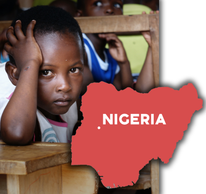

AREA

In Save the Children's report "Save our education" 12 countries are highlighted as particularly vulnerable. One of these countries is Nigeria. Here 10.5 million (equivalent to 38%) children do not go to school. «The writing and reading skills here are among the very lowest. If you are a girl in northeastern Nigeria, you are at the very back of the global school class.» The target group is children aged 6-11 years. Teachers at the school are responsible for follow-up and guidance when using the tablet. Implementation takes place on the school grounds. It is here product and the technology will be used. This presupposes the training of teachers and students.